Sie benötigen ...
... einen PC mit installiertem Betriebssystem und Zugang zum Internet.
... eine gültige User ID mit
Passwort
POP oder IMAP?
Beim Empfang Ihrer eMail-Nachrichten vom Server können Sie zwischen den Protokollen POP (Post Office Protocol) und IMAP (Internet Message Access Protocol) wählen. Mit POP werden die eingehenden Nachrichten auf den lokalen PC heruntergeladen, bei IMAP hingegen verbleiben sie (und auch eventuell angelegte Ordner) am Mailserver. IMAP ist daher vor allem dann zu empfehlen, wenn Sie auf Ihre Nachrichten von mehreren unterschiedlichen Standorten (z.B. von der Universität und von zu Hause) zugreifen wollen.Hinweise zur Installation
Outlook ist normalerweise im MS-Office-Paket integriert und wird automatisch mitinstalliert. Es kann aber teilweise auch einzeln (ohne MS-Office) erworben werden. Outlook Express wird zusammen mit dem Internet Explorer vertrieben, und ist daher bei den meisten im Handel erhältlichen PCs mit vorinstalliertem Windows-Betriebssystem vorhanden.Achtung: Bei den Versionen Outlook 98 und Outlook 2000 müssen Sie bereits bei bzw. kurz nach der Installation auswählen, ob Sie eMail-Nachrichten via Internet, bzw. für Unternehmen oder Arbeitsgruppen (z.B. via Microsoft Exchange) empfangen wollen.
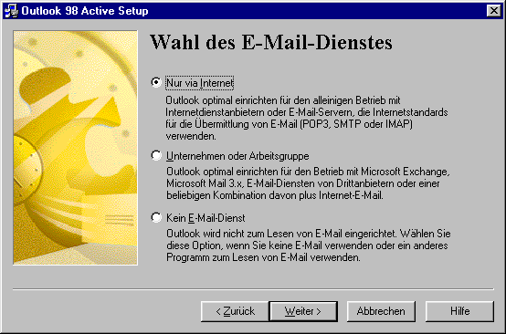
Wenn Sie die Mailservices des Technikum Wien in Anspruch nehmen möchten, wählen Sie die Variante Nur via Internet.
Sollten Sie die Art des eMail-Dienstes nachträglich ändern wollen, gehen Sie bitte folgendermaßen vor:
Falls Sie Outlook 98 verwenden, schließen Sie es und rufen Sie über Start - Systemsteuerung - Software - Outlook 98 - Hinzufügen/Entfernen das Setup-Programm auf. Nehmen Sie dort die entsprechende Konfigurationsänderung vor (Sie benötigen dazu die Installations-CD).
Bei Outlook 2000 wählen Sie Extras - Optionen - E-Mail-Dienste (oder E-Mail-Übertragung) - E-Mail-Unterstützung neu konfigurieren (mitunter benötigen Sie auch hier die Installations-CD).
Anmerkung: Bei Outlook 2002/2003 ist keine derartige Umstellung erforderlich. Outlook Express bietet derzeit keine Unterstützung für Unternehmen und Arbeitsgruppen.
Outlook 2002/2003
Zum Einrichten eines Mailkontos starten Sie Outlook entweder durch Doppelklick auf das Icon am Desktop oder über Start - Programme - Microsoft Outlook.Anmerkung: Sollte auf dem PC bereits ein anderes eMail-Programm von Microsoft installiert und konfiguriert sein, erscheint beim ersten Startvorgang meist die Frage, ob Sie die Einstellungen der bereits angelegten eMail-Konten importieren wollen. Im Zweifelsfall wählen Sie hier Nein, falls erforderlich können die entsprechenden Daten auch später importiert werden (näheres dazu am Ende dieses Dokuments unter Häufig benötigte Einstellungen und Funktionen).
Grundsätzlich gibt es zwei Möglichkeiten, den Programmpunkt für die Einrichtung eines eMail-Kontos unter Outlook XP aufzurufen. Die erste Variante mit dem Start-Assistenten funktioniert nur beim erstmaligen Aufruf des Programmes. Sie können aber auch jederzeit über den normalen Weg ein neues Konto einrichten.
Mailkonto mit dem Start-Assistenten einrichten
Der Start-Assistent führt Sie durch die Konfiguration von Outlook.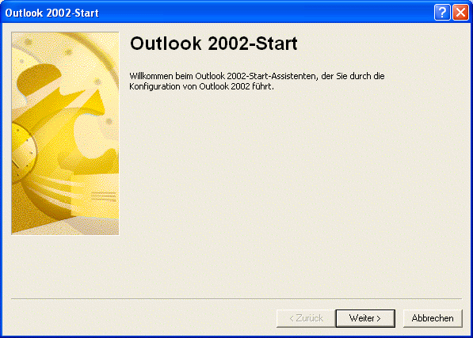
Klicken Sie auf Weiter.
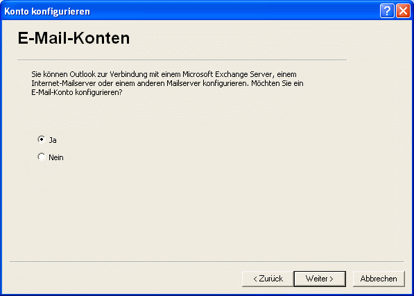
Wählen Sie hier den Punkt Ja und klicken Sie auf Weiter.
Die weitere Vorgehensweise mit dem Startassistenten entspricht der Einrichtung auf normalem Weg ab dem Fenster Servertyp.
Mailkonto auf normalem Weg einrichten
Um ein Mailkonto einzurichten, wählen Sie den Menüpunkt Extras - E-Mail-Konten.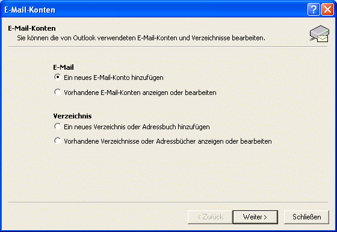
Sie können entweder ein neues Konto hinzufügen, oder bereits vorhandende Konten darstellen bzw. bearbeiten. (Dies gilt auch für Verzeichnisse und Adressbücher.) Wählen Sie Ein neues E-Mail-Konto hinzufügen und klicken Sie auf Weiter.
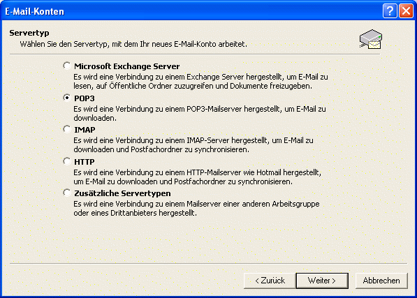
In dem daraufhin erscheinenden Fenster müssen Sie den benötigten Servertyp wählen. Falls Sie IMAP verwenden, wählen Sie bitte IMAP (falls Sie POP verwenden, dann POP3). Klicken Sie auf Weiter.
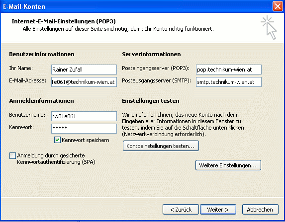
Danach erscheint das Fenster Internet-E-Mail-Einstellungen.
Unter Benutzerinformationen im Feld Ihr Name: geben Sie bitte Ihren vollständigen Namen ein. Im Feld E-Mail-Adresse: geben Sie Ihre eMail-Adresse ein (acountname@technikum-wien.at für Studierende, bzw. Vorname.Nachname@technikum-wien.at für Mitarbeiter).
Unter Anmeldeinformationen geben Sie nun im Feld Benutzername: Ihre UserID ein und unter Kennwort Ihr Passwort. Falls Sie nicht bei jedem Verbindungsaufbau Ihr Passwort erneut eingeben möchten, können Sie die Option Kennwort sichern auswählen. (Bitte achten Sie darauf, dass das Kästchen Anmeldung durch gesicherte Kennwortauthentifizierung aktiviert ist.)
Nun müssen Sie die Serverinformationen eingeben:
Im Feld Posteingangsserver geben Sie
pop.technikum-wien.at
bzw. imap.technikum-wien.at (falls der Zugriff
via IMAP erfolgen soll). Im Feld Postausgangsserver geben Sie smtp.technikum-wien.at ein.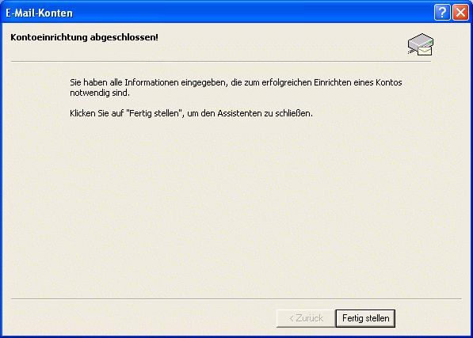
Danach erscheint ein Fenster mit der Information, dass die Einrichtung Ihres Kontos abgeschlossen ist. Mit Klick auf Fertig stellen schließen Sie den Assistenten.
Um weitere Einstellungen vorzunehmen oder zu ändern, wählen Sie erneut Extras - E-Mail Konten. Dort können Sie Ihr Konto anzeigen lassen oder bearbeiten.
Eine Zusammenfassung über weitere häufig benötigte Einstellungen und Funktionen finden Sie am Ende dieses Dokuments.
Outlook 98, 2000 und Outlook Express
Die Schritte beim Einrichten eines Mailkontos unter Outlook 98 und 2000 bzw. Outlook Express 4 bis 6 ähneln
einander sehr und sind daher im Folgenden zusammengefaßt.Starten Sie Outlook entweder durch Doppelklick auf das Icon am Desktop oder unter Windows über Start - Programme - Microsoft Outlook bzw. Outlook Express.
Wenn Sie Outlook bzw. Outlook Express das erste Mal starten, erscheint der Assistent für den Internetzugang um Sie beim Einrichten des eMail-Kontos zu unterstützen. Fahren Sie in diesem Fall wie bei der Einrichtung auf normalem Weg beim Fenster Name fort.
Wenn Sie die Einrichtung eines Kontos auf normalem Weg (bzw. nach dem erstmaligen Programmstart) durchführen wollen, wählen Sie den Menüpunkt Extras - Konten.
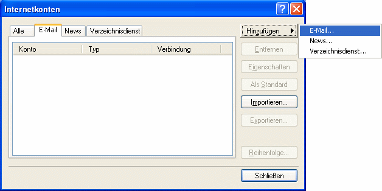
Im Fenster Internetkonten wählen Sie die Schaltfläche Hinzufügen und danach E-Mail.
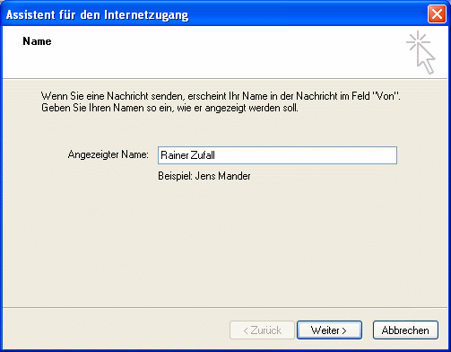
Geben Sie Ihren Namen ein und klicken Sie auf Weiter.
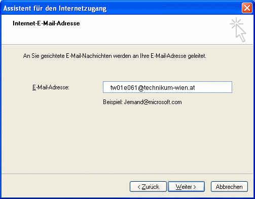
Geben Sie Ihre eMail-Adresse (für Studierende accountname@technikum-wien.at bzw. für Mitarbeiter Vornamen.Nachname@technikum-wien.at) ein und klicken Sie auf Weiter.
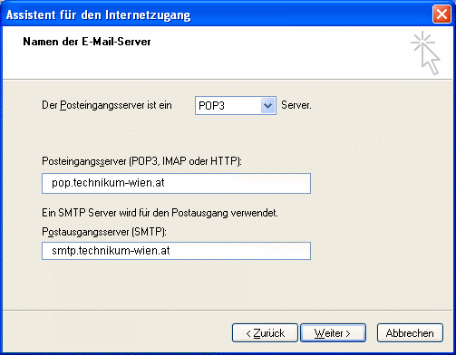
Wählen Sie die Art des Posteingangsservers:
POP3 oder IMAP. Geben Sie den Namen des Posteingangsservers ein:
pop.technikum-wien.at bzw. imap.technikum-wien.atDanach tragen Sie den Namen des Postausgangsservers ein:
smtp.technikum-wien.at.
Klicken Sie auf Weiter.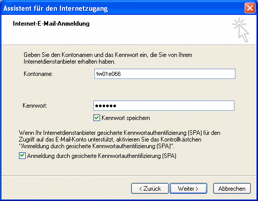
Geben Sie im Feld Kontoname Ihre UserID und Ihr Passwort ein.
(Bitte achten Sie darauf, dass das Kästchen Anmeldung durch gesicherte Kennwortauthentifizierung aktiviert ist.)
Klicken Sie danach auf Weiter.
Abhängig von der verwendeten Outlook- bzw. Outlook Express-Version und der Verbindungskonfiguration Ihres Betriebssystems, erscheint nun entweder das Fenster Einrichtung fertigstellen oder das Fenster Verbindungstyp auswählen.
Sollte das Fenster Einrichtung fertigstellen erscheinen, klicken Sie auf die Schaltfläche Fertigstellen. Die Grundkonfiguration des eMail-Kontos ist damit abgeschlossen. (Eine Zusammenfassung über weitere häufig benötigte Einstellungen und Funktionen finden Sie am Ende dieses Dokuments.)
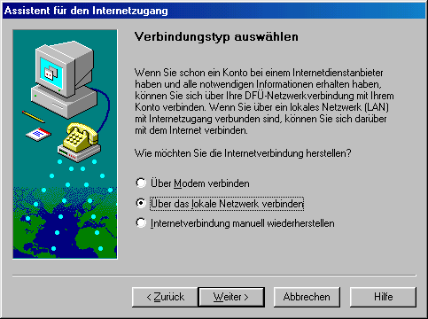
Wenn hingegen das Fenster Verbindungstyp auswählen erscheint, müssen Sie die gewünschte Art der Nachrichtenabfrage für Ihre Internetverbindung festlegen.
- Wenn Outlook bzw. Outlook Express die Internetverbindung automatisch über eine Einwahlverbindung herstellen soll, dann wählen Sie den Punkt Über Modem verbinden. Sie müssen dann in den folgenden Fenstern den Modemnamen und die gewünschte DFÜ-Verbindung festlegen.
- Wenn Sie über eine ständige Internetverbindung (z.B. über ein lokales Netzwerk) verfügen, dann wählen Sie den Punkt Über das lokale Netzwerk (LAN).
- Falls Sie keinen bestimmten Verbindungstyp festlegen wollen (z.B. wenn Sie mit einem Notebook abwechselnd verschiedene Verbindungen verwenden), wählen Sie den Punkt Internetverbindung manuell wiederherstellen.
Anmerkung: Falls erforderlich, können Sie den Verbindungstyp auch später festlegen bzw. ändern (näheres dazu am Ende dieses Dokuments unter Häufig benötigte Einstellungen und Funktionen).
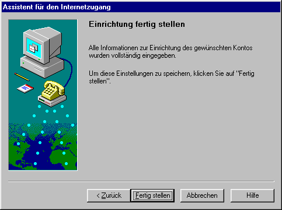
Beenden Sie die Einrichtung mit Klick auf Fertig stellen.
Häufig benötigte Einstellungen und Funktionen
Die Menüstruktur für die Konfiguration von Outlook Express und besonders von Outlook ist unter Umständen sehr unübersichtlich. Als zusätzliche Erschwernis weichen die Bezeichnungen der Menüpunkte und Funktionen von Version zu Version ab.Im Folgenden finden Sie daher eine Zusammenstellung der am häufigsten benötigten Einstellungen und Funktionen.
Servernamen, UserID und Passwort eintragen
Hier können Sie die Daten für Posteingangsserver (POP bzw. IMAP) und Postausgangsserver (SMTP) und die Anmeldeinformationen und das entsprechende Passwort) festlegen.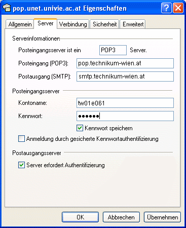
Bitte achten Sie auch darauf, dass die beiden Kästchen vor Anmeldung durch gesicherte Kennwortauthentifizierung und Postausgangsserver - Server erfordert Authentifizierung aktiviert sein dürfen.
| Outlook Express 4 | Extras - Konten - E-Mail - [Kontoname] - Eigenschaften - Server |
| Outlook Express 5 | Extras - Konten - E-Mail - [Kontoname] - Eigenschaften - Server |
| Outlook Express 6 | Extras - Konten - E-Mail - [Kontoname] - Eigenschaften - Server |
| Outlook 98 | Extras - Konten - E-Mail - [Kontoname] - Eigenschaften - Server |
| Outlook 2000 | Extras - Konten - E-Mail - [Kontoname] - Eigenschaften - Server |
| Outlook 2002 | Extras - E-Mail-Konten - Vorhandene E-Mail-Konten bearbeiten - [Kontoname] - Ändern |
Name und eMail-Adresse eintragen
Hier können Sie Ihren Namen und Ihre eMail-Adresse (accountname@technikum-wien.at für Studierende bzw. Vorname.Nachname@technikum-wien.at für Mitarbeiter) festlegen.| Outlook Express 4 | Extras - Konten - E-Mail - [Kontoname] - Eigenschaften - Allgemein |
| Outlook Express 5 | Extras - Konten - E-Mail - [Kontoname] - Eigenschaften - Allgemein |
| Outlook Express 6 | Extras - Konten - E-Mail - [Kontoname] - Eigenschaften - Allgemein |
| Outlook 98 | Extras - Konten - E-Mail - [Kontoname] - Eigenschaften - Allgemein |
| Outlook 2000 | Extras - Konten - E-Mail - [Kontoname] - Eigenschaften - Allgemein |
| Outlook 2002 | Extras - E-Mail-Konten - Vorhandene E-Mail-Konten bearbeiten - [Kontoname] - Ändern |
DFÜ bzw. LAN-Verbindung für eMail-Konto festlegen
Hier können Sie festlegen, über welche Internetverbindung Outlook bzw. Outlook Express die Nachrichten übertragen soll.| Outlook Express 4 | Extras - Konten - E-Mail - [Kontoname] - Eigenschaften - Verbindung |
| Outlook Express 5 | Extras - Konten - E-Mail - [Kontoname] - Eigenschaften - Verbindung |
| Outlook Express 6 | Extras - Konten - E-Mail - [Kontoname] - Eigenschaften - Verbindung |
| Outlook 98 | Extras - Konten - E-Mail - [Kontoname] - Eigenschaften - Verbindung |
| Outlook 2000 | Extras - Konten - E-Mail - [Kontoname] - Eigenschaften - Verbindung |
| Outlook 2002 | Extras - E-Mail-Konten - Vorhandene E-Mail-Konten bearbeiten - [Kontoname] - Ändern - Weitere Einstellungen - Verbindung |
IMAP: Gelöschte Nachrichten permanent löschen
Oft stehen Outlook-Benutzer vor dem Problem, dass gelöschte Nachrichten noch immer (allerdings durchgestrichen) im Posteingang dargestellt werden. Um diese Nachrichten endgültig zu löschen, wählen Sie den entsprechenden Menüpunkt.| Outlook Express 4 | Bearbeiten - Als gelöscht markierte Nachrichten entfernen |
| Outlook Express 5 | Bearbeiten - Als gelöscht markierte Nachrichten entfernen |
| Outlook Express 6 | Bearbeiten - Gelöschte Nachrichten permanent löschen |
| Outlook 98 | (Nicht erforderlich, da die Nachrichten in den Ordner Gelöschte Objekte verschoben werden) |
| Outlook 2000 | Bearbeiten - Gelöschte Nachrichten permanent löschen |
| Outlook 2002 | Bearbeiten - Gelöschte Nachrichten permanent löschen |
Abfrageintervall für Nachrichten
Wenn Sie über eine ständige Verbindung zum Internet verfügen, können Sie festlegen, wie oft geprüft werden soll, ob neue Nachrichten am Mailserver eingelangt sind.Bitte wählen Sie das Intervall nicht zu kurz, da es sonst zu einer unnötigen Belastung des Mailservers kommen kann. Ein zulässiger Wert wäre z.B. 10 oder 15 Minuten.
| Outlook Express 4 | Extras - Optionen - Allgemein - Nachrichteneingang alle XX Minuten prüfen |
| Outlook Express 5 | Extras - Optionen - Allgemein - Nachrichteneingang alle XX Minuten prüfen |
| Outlook Express 6 | Extras - Optionen - Allgemein - Nachrichteneingang alle XX Minuten prüfen |
| Outlook 98 | Extras - Optionen - E-Mail-Übertragung - Nachrichteneingang alle XX Minuten prüfen |
| Outlook 2000 | Extras - Optionen - E-Mail-Übertragung - Nachrichteneingang alle XX Minuten prüfen |
| Outlook 2002 | Extras - Optionen - Mail-Setup - Senden/Empfangen - Im Onlinemodus Automatische Übermittlung alle XX Minuten |
POP: Nachrichten am Server belassen
Wenn Sie Ihre Nachrichten per POP abfragen und trotzdem am Server belassen möchten (wenn Sie z.B. die Nachrichten von mehreren PCs abfragen wollen), können Sie das hier festlegen.Bitte achten Sie aber darauf, dass zu viele am Server belassene Nachrichten unseren Mailserver überlasten können und solche Nachrichten daher ab einem gewissen Umfang automatisch archiviert und aus der Mailbox gelöscht werden. Sie sollten diese Funktion daher mit Vorsicht einsetzen!
Studierende und Mitarbeiter, die Ihre Nachrichten am Server belassen wollen, sollten einen Umstieg auf das Protkoll IMAP in Erwägung ziehen.
| Outlook Express 4 | Extras - Konten - E-Mail - [Kontoname] - Eigenschaften - Erweitert - Kopie aller Nachrichten am Server belassen |
| Outlook Express 5 | Extras - Konten - E-Mail - [Kontoname] - Eigenschaften - Erweitert - Kopie aller Nachrichten am Server belassen |
| Outlook Express 6 | Extras - Konten - E-Mail - [Kontoname] - Eigenschaften - Erweitert - Kopie aller Nachrichten am Server belassen |
| Outlook 98 | Extras - Konten - E-Mail - [Kontoname] - Eigenschaften - Erweitert - Kopie aller Nachrichten am Server belassen |
| Outlook 2000 | Extras - Konten - E-Mail - [Kontoname] - Eigenschaften - Erweitert - Kopie aller Nachrichten am Server belassen |
| Outlook 2002 | Extras - E-Mail-Konten - Vorhandene E-Mail-Konten bearbeiten - [Kontoname] - Ändern - Weitere Einstellungen - Erweitert - Kopie aller Nachrichten auf dem Server belassen |
Filterregeln erstellen
Sie können Regeln festlegen, um beispielsweise Nachrichten von bestimmten Absendern oder mit bestimmten Inhalten automatisch in spezielle Ordner zu verschieben oder zu löschen.| Outlook Express 4 | Extras - Posteingangs-Assistent |
| Outlook Express 5 | Extras - Regeln - E-Mail |
| Outlook Express 6 | Extras - Nachrichtenregeln - E-Mail |
| Outlook 98 | Extras - Regel-Assistent |
| Outlook 2000 | Extras - Regel-Assistent |
| Outlook 2002 | Extras - Regel-Assistent |
Sicherheitszone für eingehende HTML-Mail
Beim Empfang von HTML-Mail besteht die Gefahr, dass unerwünschte, im HTML-Code versteckte Programme (Skripte) ausgeführt werden. Um einen gewissen Schutz vor solchen Programmen zu haben, ist es empfehlenswert hier zumindest die Zone für eingeschränkte Sites festzulegen. (Diese Zone sollte in den Einstellungen des Internet Explorers so definiert sein, dass die automatische Ausführung von Skripten nicht zugelassen wird.)| Outlook Express 4 | Extras - Optionen - Sicherheit - Sicherheitszonen - Zone: Zone für eingeschränkte Sites |
| Outlook Express 5 | Extras - Optionen - Sicherheit - Zone für eingeschränkte Sites |
| Outlook Express 6 | Extras - Optionen - Sicherheit - Zone für eingeschränkte Sites |
| Outlook 98 | Extras - Optionen - Sicherheit - Inhalt sichern - Zone: Zone für eingeschränke Sites |
| Outlook 2000 | Extras - Optionen - Sicherheit - Inhalt sichern - Zone: Eingeschränkte Sites |
| Outlook 2002 | Extras - Optionen - Sicherheit - Inhalt sichern - Zone: Eingeschränkte Sites |
Format für ausgehende Nachrichten (HTML/Nur-Text)
Hier können Sie festlegen, ob Sie Nachrichten im Format HTML, im Format Nur-Text oder (falls Sie Outlook verwenden) im Rich-Text-Format erstellen wollen.- Nachrichten im Nur-Text-Format können von allen eMail-Klienten dargestellt werden.
- Mit dem Format HTML haben manche (insbesonders ältere) eMail-Klienten Darstellungsprobleme.
- Das Rich-Text-Format ist nicht zu empfehlen, da es meist nur (neuere) Microsoft-Klienten korrekt darstellen können.
(Anmerkung: Falls sich Empfänger Ihrer Nachrichten darüber beschweren, dass anstelle eines Attachments nur eine Datei namens WINMAIL.DAT erhalten haben, sollten Sie das Format auf HTML oder besser auf Nur-Text ändern.)
| Outlook Express 4 | Extras - Optionen - Senden - Format beim Senden von E-Mail |
| Outlook Express 5 | Extras - Optionen - Senden - Nachricht Senden-Format |
| Outlook Express 6 | Extras - Optionen - Senden - Format für "Nachricht Senden" |
| Outlook 98 | Extras - Optionen - E-Mail-Format - Senden im Nachrichtenformat |
| Outlook 2000 | Extras - Optionen - E-Mail-Format - Senden im Nachrichtenformat |
| Outlook 2002 | Extras - Optionen - E-Mail-Format - Verfassen im Nachrichtenformat |
Headerzeilen darstellen
Die Headerzeilen einer Nachricht geben Aufschluss darüber, von welchem PC bzw. über welche Mailserver eine Nachricht verschickt wurde. Außerdem können die Headerzeilen noch weitere Informationen wie z.B. den verwendeten eMail-Klienten des Absenders oder bestimmte Kennzeichnungen vom Mailserver (z.B. SPAM-Flags) enthalten.| Outlook Express 4 | (Nachricht auswählen) - (Rechte Maustaste) - Eigenschaften - Details |
| Outlook Express 5 | (Nachricht auswählen) - (Rechte Maustaste) - Eigenschaften - Details |
| Outlook Express 6 | (Nachricht auswählen) - (Rechte Maustaste) - Eigenschaften - Details |
| Outlook 98 | (Nachricht öffnen) - Ansicht - Optionen - Internetkopfzeilen |
| Outlook 2000 | (Nachricht öffnen) - Ansicht - Optionen - Internetkopfzeilen |
| Outlook 2002 | (Nachricht öffnen) - Ansicht - Optionen - Internetkopfzeilen |
Import/Export von Nachrichten bzw. Adressbüchern
An dieser Stelle können Sie Nachrichten, Adressbücher und Konto-Daten von anderen Mail-Programmen importieren oder für die Verwendung in anderen Mailprogrammen exportieren.| Outlook Express 4 | Datei - Importieren oder Datei - Exportieren |
| Outlook Express 5 | Datei - Importieren oder Datei - Exportieren |
| Outlook Express 6 | Datei - Importieren oder Datei - Exportieren |
| Outlook 98 | Datei - Importieren/Exportieren |
| Outlook 2000 | Datei - Importieren/Exportieren |
| Outlook 2002 | Datei - Importieren/Exportieren |
Priorität einer ausgehenden Nachricht ändern
Sie können die Prioriät bzw. Dringlichkeit einer ausgehenden Nachricht festlegen. Sofern der eMail-Klient des Empfängers diese Funktion unterstützt, wird bei ihm die entsprechende Priorität angezeigt.| Outlook Express 4 | (Neue Nachricht erstellen) - Extras - Dringlichkeit festlegen |
| Outlook Express 5 | (Neue Nachricht erstellen) - Nachricht - Dringlichkeit festlegen |
| Outlook Express 6 | (Neue Nachricht erstellen) - Nachricht - Priorität festlegen |
| Outlook 98 | (Neue Nachricht erstellen) - Ansicht - Optionen - Wichtigkeit |
| Outlook 2000 | (Neue Nachricht erstellen) - Optionen - Wichtigkeit |
| Outlook 2002 | (Neue Nachricht erstellen) - Optionen - Wichtigkeit |
Anfordern von Lesebestätigungen für Nachrichten
Wenn Sie eine Lesebestätigung anfordern und der eMail-Klient des Empfängers dies unterstützt, erhalten Sie eine Rückmeldung, sobald Ihre Nachricht gelesen wurde.Hier können Sie diese Anforderung für einzelne Nachrichten festlegen:
| Outlook Express 4 | (Funktion nicht vorhanden) |
| Outlook Express 5 | (Neue Nachricht) - Extras - Lesebestätigung anfordern |
| Outlook Express 6 | (Neue Nachricht) - Extras - Lesebestätigung anfordern |
| Outlook 98 | (Funktion in der Nur-Internet-Konfiguration nicht verfügbar) |
| Outlook 2000 | (Neue Nachricht) - Optionen - Das Lesen dieser Nachricht bestätigen |
| Outlook 2002 | (Neue Nachricht) - Optionen - Das Lesen dieser Nachricht bestätigen |
| Outlook Express 4 | (Funktion nicht vorhanden) |
| Outlook Express 5 | Extras - Optionen - Bestätigungen - Lesebestätigung für alle versandten Nachrichten anfordern |
| Outlook Express 6 | Extras - Optionen - Bestätigungen - Lesebestätigung für alle gesendeten Nachrichten anfordern |
| Outlook 98 | (Funktion in der Nur-Internet-Konfiguration nicht verfügbar) |
| Outlook 2000 | Extras - Optionen - Einstellungen - E-Mail-Optionen - Verlaufoptionen - Lesebestätigung |
| Outlook 2002 | Extras - Optionen - Einstellungen - E-Mail-Optionen - Verlaufoptionen - Lesebestätigung |
Lesebestätigungen senden
Hier können Sie festlegen, wie Outlook bzw. Outlook Express auf die Anforderung einer Lesebestätigung reagieren soll.| Outlook Express 4 | (Funktion nicht vorhanden) |
| Outlook Express 5 | Extras - Optionen - Bestätigungen - Versenden von Lesebestätigungen |
| Outlook Express 6 | Extras - Optionen - Bestätigungen - Versenden von Lesebestätigungen |
| Outlook 98 | (Funktion in der Nur-Internet-Konfiguration nicht verfügbar) |
| Outlook 2000 | Extras - Optionen - Einstellungen - E-Mail-Optionen - Verlaufoptionen - Vor dem Senden einer Antwort bestätigen (bzw. Immer/Nie eine Antwort senden) |
| Outlook 2002 | Extras - Optionen - Einstellungen - E-Mail-Optionen - Verlaufoptionen - Das Senden einer Antwort vorher bestätigen (bzw. Immer/Nie eine Antwort senden) |
Mailing-Parameter
In der folgenden Tabelle finden Sie eine Zusammenstellung der erforderlichen Kontodaten und Servernamen für Mitarbeiter und Studierende des Technikum Wien.| MitarbeiterInnen (Mailbox) | Studierende (Unet) | |
| eMail-Adresse | vorname.nachname@technikum-wien.at | accountname@technikum-wien.at |
| POP-Server (Posteingang) | pop.technikum-wien.at | pop.technikum-wien.at |
| IMAP-Server (Posteingang) | imap.technikum-wien.at | imap.technikum-wien.at |
| SMTP-Server (Postausgang) | smtp.technikum-wien.at | smtp.technikum-wien.at |